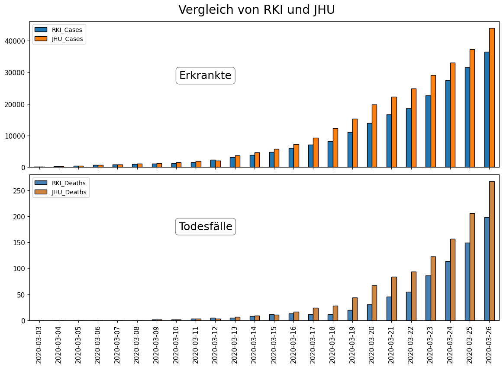

COVID-19: Verwirrung bei den Fallzahlen in Deutschland
____________________________________________________________________________________________________________________

Erklärung des Unterschieds in den COVID-19 Fallzahlen in Deutschland zwischen RKI und anderen Quellen.
Vergleichstabelle der gemeldeten täglichen Zahlen des Robert Koch Instituts (RKI) und der John-Hopkins University (JHU).
_________________________________________________________________________________________________________________________________

_________________________________________________________________________________________________________________________________
Unterschied:
Zeitlicher Verzug bei der Bearbeitung der aktuellen Fallzahlen in den Gesundheitsämtern und bei der Weitergabe an das RKI. Quelle: Tagesschau
- Keine der Zahlen sind "falsch" nur zeitlich verzögert.
- Bei einem Vergleich der Daten sollte immer auf die Quelle und den Zeitstempel der Daten geachtet werden!
_________________________________________________________________________________________________________________________________
Im Zuge des "WIRvsVIRUS" Hackathon der Bundesregierung entstanden.